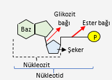
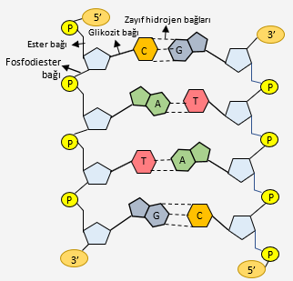
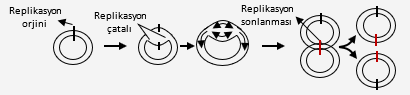
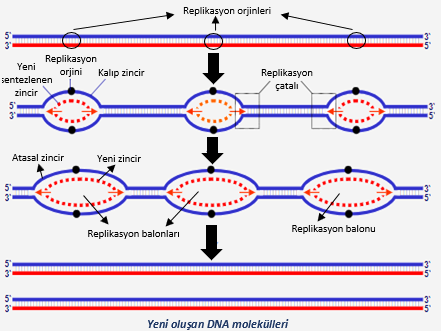

Genden ProteineNükleik AsitlerDNA v. RNADNARNAmRNAtRNArRNAGenetik Materyal OrganizasyonuDNA ReplikasyonuReplikasyon AşamalarıProtein SenteziProtein Sentezi AşamalarıGenetik Mühendisliği & BiyoteknolojiModern biyoteknoloji faydalarıModern biyoteknoloji uygulamalarıTür içi ve türler arası melezlemeYapay döllemePoliploidiGen aktarımıKlonlamaModel organizma seçiminde göz önünde bulundurulan faktörlerGen klonlamaGen klonlama kullanım alanlarıBakteri kullanılarak yapılan gen klonlaması aşamalarıCanlı KlonlamaFaydalarıAşamalarıGenetik Mühendisliği & Biyoteknoloji Uygulamalarının İnsan Hayatına EtkisiKök HücreFaydalarYapay organ sorunlarıYapay organ yerine şimdilik kullanılan cihazlarGen terapisiGenetik danışmanlık önerilen gruplarİnsan Genom ProjesiFaydalarıZararlarıDNA Parmak İziBiyogüvenlik ve BiyoetikGDO zararlarıBiyogüvenlikBiyoetik
Genden Proteine
Nükleik Asitler
| Terim | Anlam |
|---|---|
Nükleik asit | ➼ Canlılarda gerçekleşen tüm metabolik olayları denetleyen ➼ Genetik özelliklerin kuşaktan kuşağa aktarılmasını sağlayan ➼ Canlıları birbirinden farklı kılan organik moleküller |
DNA | Kalıtımda görev alan çift zincirli ve sarmal yapıdaki nükleik asit çeşidi |
RNA | Protein sentezinde görev alan ve tek zincirli asit çeşidi |
Nükleotit | DNA'yı oluşturan yapı birimleri |
Şeker-fosfat omurgası | Nükleotitlerin şeker ve fosfat kısımlarının birbirine bağlanması ile oluşan dikey zincir |
Nükleotit yapısında
- Fosfat grubu (H3PO4)
- Pentoz (5 karbonlu şeker)
- Azotlu organik baz
Azotlu organik bazlarda çift halkalı pürin (adenin, guanin) ve tek halkalı pirimidin (sitozin, timin, urasil) karşı karşıya gelir.


DNA v. RNA
| DNA | RNA |
|---|---|
| Deoksiribonükleik asit | Ribonükleik asit |
| Piriminidin: sitozin, timin | Piriminidin: sitozin, urasil |
| Pentoz: Deoksiriboz | Pentoz: Riboz |
| Çift iplikli | Tek iplikli |
| Kendini eşleyebilir / onarabilir. | Kendini eşleyemez / onaramaz |
| Yıkılıp yeniden yapılamaz | Yıkılıp yeniden yapılabilir |
| Ökaryotlarda ➼ çekirdekçik ➼ çekirdek ➼ mitokondri ➼ kloroplast | Ökaryotlarda ➼ çekirdekçik ➼ çekirdek ➼ mitokondri ➼ kloroplast ➼ sitoplazma ➼ ribozom |
| Prokaryotlarda ➼ sitoplazma | Prokaryotlarda ➼ sitoplazma ➼ ribozom |
| Protein sentezine dolaylı olarak katılır | Protein sentezine doğrudan katılır |
| DNA polimeraz ile sentezlenir | RNA polimeraz ile sentezlenir |
| Hidrolizi DNAaz ile | Hidrolizi RNAaz ile olur |
| Yöneticidir. Emir verir. | DNA'nın emirlerini uygular / iletir. |
| Her türün diploit hücresinde miktarı eşittir | Miktarı hücreden hücreye değişir |
| Ortak Özellikler |
|---|
| C, H, O, N, P elementleri bulundurur |
| Polinükleotit yapıda |
| Adenin, guanin, sitozin azotlu organik bazları bulundurur |
| Pentoz bulundurur |
| İnorganik fosfat grubu bulundurur |
| Ökaryotlarda ➼ çekirdekçik ➼ çekirdek ➼ mitokondri ➼ kloroplast |
| Prokaryotlarda ➼ sitoplazma |
| Protein sentezinde görev alır |
| Tüm canlılarda bulunur |
| Bazı virüslerde kalıtımı sağlar |
DNA
DNA hücre çekirdeğinden çıkamadığı için protein sentezlemek için mRNA'yı sentezler.
- DNA'nın sadece bir zinciri kalıp olarak kullanılır ➼
Anlamlı zincir
- DNA'nın sadece bir zinciri kalıp olarak kullanılır ➼
xxxxxxxxxx➼ Nükleotitler arasındaki hidrojen bağları zayıf olduğu için oluşum / yıkımlarında su yok.A+T/G+C türe özgü
Ökaryotlarda doğrusal sarmal yapıda
Prokaryotlarda halkasal yapıda
Canlıların her hücresindeki DNA miktarı aynı
- Farklı hücrelerde farklı özellikler görülmesinin nedeni hücrede özelliği görülmemesi istenen genlerin histon proteini ile kaplanması
Bir iplikte fosfat-şeker bağları 5' uçtan 3' uca diğer iplik ise 3' uçtan 5' uca bağlandığı için antiparalel
DNA interfazda çekirdek içinde kromatin halinde görülür
- Hücre bölünmediği zaman uzun ince ağ şeklinde
- Hücre bölünmeye başladığında kısalıp kalınlaşarak bağımsız yapılar halinde (
Kromozom)
Ökaryotlarda her bir kromozom ayrı bir DNA molekülü
Prokaryotlarda tek kromozom
Fosfat grubu + deoksiriboz + adenin = adenin deoksiribonükleotit

RNA
mRNA
- DNA çok büyük olduğu için çekirdekten çıkamaz, mRNA sentezler
- mRNA genden aldığı bilgiyi ribozoma taşır ve ribozoma bağlanır
- Protein sentezi için kalıp
- Aminoasit çeşidi ve sırasını belirleyen bilgi taşır
- Birkaç kez kullanılabilir
- mRNA çeşidi sayısı sentezlenen protein çeşidi sayısı kadardır
tRNA
- Protein sentezinde kullanılacak amino asitleri sitoplazmadan ribozoma
- Çekirdekte sentezlenir
- Kendi üstüne katlamalar yapar ve nükleotitleri arasında hidrojen bağları kurulur
- Çift zincirli yonca yaprağı
- Tekrar tekrar kullanılabilir
- Canlı yapısında bulunan 20 çeşit amino asidin her birine özgü en az bir tRNA molekülü
- Aynı amino asidin taşınmasında birden fazla tRNA rol alabilir

rRNA
- Çekirdekçikte sentezlenir
- Ribozomun yapısının 2/3ü
- mRNA ve tRNA arası iletişimi sağlar
- Enzim gibi davranıp amino asitler arası peptit bağlarının kurulmasını sağlar
- Büyük alt birimde bulunur
Genetik Materyal Organizasyonu
| Terim | Anlam |
|---|---|
Kromozom | ➼ Histon proteini ve DNA'dan oluşan nükleoprotein yapı ➼ En belirgin metafazda |
Gen | Tanım DNA'da belirli bir özelliği ifade etmeye yarayan, belirli bir çeşit proteini kodlayan, bir karakterin ortaya çıkmasını sağlayan anlamlı şifre. Özellikler ➼ Kendini kopyalayabilir (DNA replikasyonu ile kopyalanabilir) ➼ Nükleotitlerden oluşur ➼ Tüm metabolik faaliyetler için gerekli bilgileri içeren birimler |
Mutasyon | Genin değişikliğe uğraması |
DNA Replikasyonu
| Terim | Anlam |
|---|---|
Replikasyon | ➼ DNA'nın eşlenerek bir kopyasının oluşturulması ➼ İnterfazda gerçekleşir |
Yarı korunumlu eşlenme | ➼ İki zincirli DNA'nın her bir ipliğinin kalıp görevi yaparak kendine eş yeni bir DNA ipliği oluşturması ➼ Her ana DNA molekülünden yeni oluşan DNA molekülleri, ana DNA'nın bir zincirini taşır |
Replikasyon orjini | Replikasyonun başlangıç noktası |
Replikasyon çatalı | ➼ Replikasyon orjininden iki zincir ters yönde ayrılmaya başladığında kromozom üstünde oluşan yapı ➼ Önce orjinde oluşup replikasyon devam ettikçe ilerler |
Helikaz | ➼ Azotlu organik bazlar arasındaki zayıf hidrojen bağlarını kopararak sarmal zincirleri birbirinden ayıran enzim ➼ ATP harcanır |
DNA polimeraz | ➼ DNA sentezinde yeni sentezlenecek zincirin ucuna nükleotit eklemesi yapan enzim ➼ Ortamda bulunan, daha önce sentezlenmiş serbest nükleotitleri kullanır ➼ DNA ipliğinde meydana gelen hataların onarılmasında rol oynar |
DNA ligaz | ➼ Birbirini takip eden DNA parçacıklarını fosfodiester bağıyla birleştiren enzim ➼ ATP harcanır |
Gerekenler
- 4 çeşit deoksiribonükleotit
- DNA polimeraz
- DNA ligaz
- Helikaz
- Kalıp görevi görecek DNA
- Mg iyonları (DNA polimeraz aktivitesi için)
Prokaryotlarda bir bitiş bir de başlangıç noktası

Ökaryotlarda birçok bitiş ve başlangıç noktası olması nedenleri
- DNA çok uzun
- DNA polimeraz nükleotit ekleme hızı daha düşük

Replikasyon Aşamaları
Helikaz azotlu organik bazların arasındaki bağları kopararak sarmal zincirleri birbirinden ayırır
DNA polimeraz yeni sentezlenecek ipliğin ucuna nükleotit eklemesi yapar.
DNA replikasyonu sırasında oluşan DNA parçacıkları arasındaki boşluklar DNA ligaz enzimi ile kapatılır.
DNA polimeraz sadece 5' ➞ 3' nükleotit ekleyebildiğinden, ipliklerden birini kesintisiz sentezleyebilirken diğerini parça parça sentezlemek zorunda kalır. Bu parçalara
Okazaki parçalarıdenir.
Protein Sentezi
| Terim | Anlam |
|---|---|
Şifre | Haberleşmeye yarayan işaretler bütünü |
Genetik şifre (genetik kod) | ➼ DNA veya mRNA'daki baz dizileri ve bu dizilere uygun şekilde sentezlenen proteindeki amino asitlerin dizileşindeki uyumu ifade eder ➼ Evrensel, 3'lü nükleotit dizilerinden oluşan şifreler ➼ DNA'da kod, mRNA'da kodon, tRNA'da antikodon ile ifade edilir. |
Metiyonin | Başlama kodonu (AUG) |
Anlamlı iplik | Genlerin bulunduğu iplik |
Transkripsiyon | ➼ DNA'nın anlamlı (kalıp) ipliğinin üzerindeki kodonlara uygun olarak mRNA sentezlenmesi ➼ "Şifrenin yazılımı" |
RNA polimeraz | DNA'nın ilgili gen bölgesini açarak kalıp ipliğin kaşıtı olarak mRNA sentezini gerçekleştip sentez tamamlandıktan sonra ilgili bölgeyi tekrar sarmal hale getiren enzim |
Translasyon | mRNA yönetiminde gerçekleşen protein sentezi |
Ribozom | Amino asitlerin mRNA'daki genetik bilgiye göre birbirlerine bağlanarak protein haline gelmesini sağlayan organeller |
Poliribozom (Polizom) | ➼ Bir mRNA üzerine birden fazla ribozomun tutunmasıyla oluşan yapılar ➼ Aynı çeşit proteinden kısa sürede ve çok miktarda üretilmesini sağlar |
Canlı yapısında bulunan proteinlerin tümünün sentezlenebilmesi için 20 farklı amino asit gerekli
- 20 farklı amino asidi şifrelebilmek için 20 farklı şifre gerekli
Şifreler 1 harf uzunluğunda olursa 41 = 4 tane şifre oluşur > Yeterli değil
Şifreler 2 harf uzunluğunda olursa 42 = 16 tane şifre oluşur > Yeterli değil
Şifreler 3 harf uzunluğunda olursa 43 = 64 tane şifre oluşur > Yeterli
mRNA'daki 64 çeşit kodondan 3'ü amino asit kodlamaz >
Durdurucu kodon61 çeşit kodon 20 çeşit amino asit kodlar
- Mutasyonlara karşı koruyucu

Prokaryot hücrelerde transkripsiyon ve translasyon sitoplazmada
Ökaryot hücrelerde transkripsiyon çekirdek içinde, mitokondri matriksinde ve kloroplast stromasında;
translasyon sitoplazmada
Protein Sentezi Aşamaları
Kalıp ipliğe RNA polimeraz bağlanır
RNA polimeraz DNA'nın ilgili gen bölgesini açar
RNA polimeraz mRNA sentezler (Transkripsiyon)
mRNA genetik bilgiyi çekirdek zarındaki porlardan geçerek DNA'dan ribozomlara taşır
mRNA ribozomun küçük alt birimine bağlanır.
Metiyonin taşıyan tRNA antikodonu mRNA'ya bağlanır (Antikodon ile kodon arasında geçici hidrojen bağları)
Ribozomun büyük alt birimi komplekse bağlanır
Ribozomun 1. bölgesinde mRNA kodonu ile uygun amino asidi taşıyan tRNA antikodonu hidrojen bağları yapar.
Büyük alt birimde bulunan rRNA, 2. bölgedeki uzayan polipeptit ve 1. bölgedeki amino asit arasında peptit bağı kurar.
mRNA kayarak ilerler ve 1. bölgedeki tRNA 2. bölgeye, 2. bölgedeki tRNA 3. bölgeye (çıkış bölgesi) geçip ribozomu terkeder.
- bölgeye yeni tRNA gelir
8-9-10-11 mRNA'daki durdurma kodonuna gelinceye kadar tekrar eder.
Durdurucu kodona sonlandırıcı protein bağlanır.
Sonlandırıcı protein polipeptit zinciri ile tRNA arasındaki bağı koparır
Polipeptit zinciri ve tRNA ribozomdan ayrılır
mRNA ribozomdan ayrılır ve ribozomun alt birimleri birbirinden ayrılır
Genetik Mühendisliği & Biyoteknoloji
| Terim | Anlam |
|---|---|
Genetik mühendisliği | Tanım ➼ Canlıların kalıtsal özelliklerini değiştirerek onlara yeni işlevler kazandırılmasına yönelik çalışmalar yapan bilim dalı. Çalışmalar ➼ Nükleotitlerin dizilişlerinin belirlenmesi, ➼ Genlerin izole edip çoğaltılması, ➼ Bir canlıdan diğerine gen aktarılması |
Biyoteknoloji | ➼ Organizmaların ve bileşenlerin faydalı ürün elde etmek için kullanıldığı uygulamalar ➼ Genetik mühendisliğinin sağladığı bilgilerle canlılardan ekonomik değeri yüksek ürünler elde etmeyi amaçlar |
Klasik biyoteknoloji | ➼ Biyolojik sistemler yardımıyla ham maddelerin yeni ürünlere dönüştürüldüğü işlemler ➼ Yoğurt, peynir, sirke, hamurun mayalanması, hayvan ve bitki ıslahı |
Modern Biyoteknoloji | Bilimsel metot ve tekniklerle bitki, hayvan ve mikroorganizmaların yapılarının kültür ortamında değiştirilip geliştirilerek yeni ürünler elde edilmesi |
Melez | Genetik yapısı farklı bireylerin çaprazlanması sonucu oluşan bireyler |
Türkiye Biyoteknoloji Strateji ve Eylem Planı
Modern biyoteknoloji faydaları
- Daha ucuz
- Daha hızlı
- Daha fazla ürün
- Daha dayanıklı ürünler
Modern biyoteknoloji uygulamaları
- Tür içi ve türler arası melezleme
- Yapay dölleme
- Poliploidi
- Gen aktarımı
- Klonlama
Konu arasında verilen bazı örnekler:
Tüp bebek
Yapay rahim
Embriyo ameliyatı
Kanalizasyon sularının arıtıldığı sistemlerde mikroorganizmalardan yararlanılması
Petrol ve türevlerinin çevreye verdiği zararı az seviyede tutmak
Bakteriler ile ağır metallerin doğada birikmesini engellemek
Özellikle mineral madenciliğinde
Tuzlu ve soğuk sularda yaşayabilir şekilde üretilen transgenik mikroorganizmaları deniz ve okyanusların temizlenmesinde kullanmak
Endüstriyel enzimleri hızlı ve ekonomik üretilmesi
Bu enzimler çevre kirliliğinin önlenmesinde, deterjanlarda, tekstilde ve kağıt sanayisinde kullanılır
Vitamin, antibiyotik ve bazı deterjanların üretimi
Tür içi ve türler arası melezleme
Yakın akraba canlılar arasındaki melezlemeler çekinik özellikteki genlerin bir araya gelmesiyle hastalıkların oluşmasına sebep olabilir.
Farklı karakterler yönüyle homozigot olan bireyler arasında yapılan melezlemeler sonucunda daha verimli bireyler elde edilebilir.
- Soğuğa dayanıksız iri taneli buğday ile soğuğa dayanıklı küçük taneli buğdayın çaprazlanmasıyla soğuğa dayanıklı ve iri taneli buğday
- Dişi at ve erkek eşekten çevre koşullarına daha dayanıklı katır
Yapay dölleme
- Damızlık özelliklerine sahip verimli erkek bireylerden alınan spermler dondurularak saklanır. Gerektiğinde yapay dölleme ile üstün özelliklere sahip yumurtaların döllenmesinde bu spermler kullanılır.
- İnek, koyun, keçi gibi memeli canlılarda; et ve süt verimi yüksek bireyler oluşturmak için
Poliploidi
- Bazı canlıların somatik hücrelerinde iki kromozom takımından daha fazla sayıda kromozom takımına sahip olması durumu
- Poliploidi sayesinde daha gösterişli çiçeklere sahip, iri meyveli ve bol ürün veren bitkiler elde edilebilmiştir
- Çekirdeksiz karpuz, çilek, muz, şeker kamışı
Gen aktarımı
| Terim | Anlam |
|---|---|
Rekombinant DNA | Gen aktarımı ile yapısal özelliği değişmiş DNA |
Gen teknolojisi | Bir canlı türüne başka bir canlı türünden gen aktarılması veya var olan genetik yapıya müdahele edilmesi ile yeni genetik özelliklerin kazandırılmasını sağlayan biyoteknolojik yöntemler |
GDO (Transgenik organizma) | Çoğunlukla farklı bir türden gen aktarımıyla belirli özellikleri değiştirilmiş canlılar |
- Nergis bitkisinin beta karoten üretiminden sorumlu geni beyaz pirince aktarılarak A vitamini bakımından zengin altın pirinç üretilmiştir.
Klonlama
| Terim | Anlam |
|---|---|
Gen klonlaması | Bir genin kopyasını oluşturmak için kullanılan yöntem ve tekniklerin tamamı |
Canlı klonlama | Bir canlının genetik ikizinin oluşturulması |
Klon | Bir hücreden çoğaltılan ve genetik yapısı tamamen aynı olan hücreler |
Model organizma | Deney ve araştırmalarda kullanılmaya uygun özellikleri taşıyan canlılar |
- Deneyleri insanların üzerinde gerçekleştirmek etik olmadığında model organizma kullanılır
Model organizma seçiminde göz önünde bulundurulan faktörler
Deneysel uygulamalar için elverişlilik
Genomunda kolay değişiklik yapılabilen canlılar
Örnek:
Meyve sineğiKısa yaşam döngüsü
Deneylerin daha kısa sürede sonuca ulaşması ve daha fazla nesil üzerinde gözlem yapılabilmesi için
Laboratuvar ortamında yetiştirilebilme
Boyut, beslenme biçimi, yaşadığı sıcaklık önemli
Örnek:
FareGenom büyüklüğü
Genom küçük olduğunda haritasını çıkarmak daha kolay
Örnek:
Hardal bitkisi(Genom haritası çıkarılmış ilk bitki)Genom haritasının çıkarılmış olması
Örnek:
Yuvarlak solucan(Genom haritası çıkarılmış ilk çok hücreli)Ekonomik koşullar
Ucuz ve kolay bulunabilir, bakımı masrafsız```
Örnek:
Ekmek mayası
Gen klonlama
| Terim | Anlam |
|---|---|
Plazmit | Klonlamada vektör olarak kullanılan ve bakterinin sitoplazmasında bulunan DNA parçası |
Önceden kadavralardan ve çeşitlili memeli canlılardan üretilen insülin ve GH artık bakterilerle
- Bu hormonların sentezinden sorumlu genler, insan DNA'larından izole edilerek çeşitli bakterilere aktarılmaktadır.
- Daha kolay ve daha ucuz
Gen klonlama kullanım alanları
Çeşitli hastalıkların tedavisi için hormon, antibiyotik ve antikor üretiminde
Bitkilerde ürün verimi ve kalitesini artırmada
Örnek: besin değeri artırma
Daha dirençli ürünler oluşturmada
Soğuk, kuraklık, virüs, yabani ot yokedici ilaçlar karşısında direnç
Kültür bakterilerinde tek bir doku hücresinden olgun bakteriler oluşturmada
Bakteri kullanılarak yapılan gen klonlaması aşamaları
- Geni klonlanmak istenen canlıya ait DNA ve vektör olarak kullanılacak bakteri plazmiti izole edilir.
- İstenilen gen ve bakteri plazmiti aynı restriksiyon enzimi ile kesilir.
- Kesilen gen ve plazmit uygun koşullarda DNA ligaz enzimi ile birleştirilir. Bu şekilde rekombinant DNA oluşturulmuş olur.
- Plazmit tekrar bakteri hücresine aktarılır
- Rekombinant bakteriler uygun kültür ortamında çoğaltılır
- Bitkilere ilk gen aktarımı: Ateş böceğinden lusiferaz geninintütün bitkisine verilmesi ile ışık saçan tütün
Canlı Klonlama
Faydaları
- Verimli hayvan ırklarının özellikleri korunarak çoğaltılması
- Nesli tükenmesi tehlikesi altında olan hayvanları kolayca üretme
Aşamaları
- Klonlanacak canlının bir vücut hücresinin çekirdeği çıkartılır.
- Çekirdek, aynı tür dişi bireyin çekirdeği çıkartılmış yumurta hücresine aktarılır.
- Bu hücre zigot görevi görür. Mitoz bölünmelerle embriyo oluşur.
- Embriyo aynı tür farklı dişi bireyin uterusuna yerleştirilir.
- Gebelik tamamlandıktan sonra doğan yavru, hücre çekirdeği alınan hayvanın kopyası olur.
Genetik Mühendisliği & Biyoteknoloji Uygulamalarının İnsan Hayatına Etkisi
| Terim | Anlam |
|---|---|
İnterferon | Parazit, bakteri, virüs ve tümörlere karşı vücudumuzda üretilen bağışıklık moleküllleri |
İnsülin, antibiyotik, hormon üretimi
Aşılarla virüslere karşı bağışıklık
Bağışıklık sistemi hücreleri virüsleri taşıdıkları protein kılıflardan ayırt ederek bağışıklık sağlar.
Sağlıklı insanlara virüsü çevreleyen kılıftaki proteinler verilerek bunları virüs gibi algılamaları sağlanır.
Protein kılıf sentezinden sorumlu DNA'lar bakterilere aktarılarak bu proteinlerden bolca üretilip aşılarda kullanılır.
İnterferon üretimi
E. coli gibi bakterilerden ve çeşitli transgenik canlılardan yararlanılır.
Kanser tedavilerinde sıklıkla kullanılır
Hastalık tedavisinde kullanılmak üzere uygun özelliklere sahip virüs üretimi
Kök Hücre
| Terim | Anlam |
|---|---|
Kök hücre | Yenilenme gücü yüksek olan, vücut içinde ve uygun koşullar sağlanırsa laboratuvar ortamında sürekli bölünebilen ve birçok hücre tipine dönüşebilen farklılaşmamış hücreler |
Yapay organ | Fizyolojik görevini tam olarak yerine getiremeyen hayati organların yerine mekanik malzemelerden tasarlanan, doku mühendisliği ile üretilen organlar |
- Embriyo (blastula evresi), göbek kordonu (en kolay) ve yetişkin bireylerden (dönüşüm gücü az) elde edilebilir
Faydalar
- Yıpranmış doku ve organ onarımı
- Bazı hastalıkların tedavisi
- Yapay organ üretimi
Yapay organ sorunları
- Üretim zor
- Yapay organlar doğal organların işlevlerini tam olarak yerine getiremiyor
Yapay organ yerine şimdilik kullanılan cihazlar
- Kalp pilleri
- İşitme cihazları
- Diyaliz makineleri
Gen terapisi
| Terim | Anlam |
|---|---|
Gen terapisi | Canlılarda bulunan işlev ve yapıca bozuk genlerin tespit edilmesi, değiştirilmesi ve onarılmasını sağlayan uygulamalar |
Genetik danışmanlık | Kalıtsal hastalığı olan veya bu tür hastalıkları taşıma riski bulunan bireylere uygulanması gereken testler, hastalıkların olası sonuçları ve varsa tedavileri ile ilgili bilgi verilmesi |
Genetik danışmanlık önerilen gruplar
- Aile ve akrabalarında kalıtsal hastalık görülen kişiler
- Akraba evliliği yapanlar
- Bir veya birden fazla sayıda anormal bebek doğuran kadınlar
- Doğum öncesi genetik risklerini öğrenmek isteyen çiftler
İnsan Genom Projesi
| Terim | Anlam |
|---|---|
Genom Projesi | Genetik mühendisliği çalışmaları ile bir canlının genomundaki tüm genleri yerlerini berlilemek ve haritalarını çıkarmak için yapılan çalışmalar |
İlk yıllarda meyve sineği, E. coli, maya, meyve sineği, fare
- Özellikle meyve sineği ve farenin genetik işleyişi insanlarla büyük oranda benzerlik gösterir
1990'da
İnsan Genom Projesibaşlar. 2003'te tamamlanır.
Faydaları
- Şeker, kanser ve kalp damar hastalıklarının tedavisi kolaylaşacak
- Bu tip hastalıklar önceden teşhis edilip önlenebilecek
- Kişiye özel ilaçlarla yan etkiler azaltılabilecek, tedaviler daha etkili olacak
- Gen teknolojisinin gelişmesini sağlamıştır
- Gen terapisi sayesinde istenmeyen özellikleri istenen özelliklerle değiştirilebilecek
- Birçok kanser çeşidine tedavi bulunabilecek
- Organ nakillerinde doku uyumuyla ilgili sorunlar ortadan kaldırılabilecek
Zararları
- Hastalığa yatkınlığı öğrenmek psikolojik sorunlara yol açabilir
- İşverenler hastalıklara yatkınlığı olan insanları işe almamak isteyebilir
- Sigorta şirketleri hastalığa yatkınlık nedeniyle sağlık sigortası yapmayabilir
- Bu nedenle genetik bilginin gizliliğine dikkat etmek gerekir
DNA Parmak İzi
| Terim | Anlam |
|---|---|
DNA parmak izi | Bir canlıya ait hücredeki DNA baz diziliminde tekrar eden anlamsız baz dizilerinin jel üzerinde oluşturdukları bantlı yapı |
PCR (Polimeraz Zincir Reaksiyonu) | ➼ Tekrar eden anlamsız baz dizilerini çoğatmak için kullanılan yöntem ➼ Temel olarak amacı yüksek sıcaklıkta yapısı bozulmayan bir DNA polimeraz kullanılarak DNA replikasyonunu ve çoğaltılmasını sağlamak |
Elektroforez | Farklı uzunluktaki DNA parçaları birbirinden ayırmak için kullanılan yöntem |
- DNA uygun restriksiyon enzimi ile kesilir.
- Anlamsız baz dizileri PCR ile çoğaltılır.
- Elde edilen DNA'lar özel bir jele yüklenir.
- Elektroforez ile farklı uzunluktaki DNA parçaları birbirinden ayrılır.
- DNA parçaları jel üzerinde büyüklüklerine göre belirli uzaklıklarda bantlar oluşturur.
- Bu bantlı yapılar bireye özgüdür ve
DNA parmak iziolarak adlandırılır.
- Adli vakalarda, suçluların tespitinde, babalık davalarında, bitki ve hayvan ırklarının belirlenmesinde kullanılır.
Biyogüvenlik ve Biyoetik
| Terim | Anlam |
|---|---|
Biyogüvenlik | Transgenik ürünlerin olası risklerinin değerlendirilmesi ve kontrol altına alınması, modern biyoteknolojinin insan sağlığı ve çevreye zarar vermeden uygulanmasını sağlamak için alınması gereken politik ve işlevsel önlemlerin tümü |
Biyoetik | Biyoloji ve tıp alanındaki gelişmelerin meydana getirdiği tartışmalı ve etik konuları inceleyen özel bir disiplin |
GDO zararları
- Çeşitli alerjik reaksiyonlara sebep olmuş.
- Uzun süre kullanımda kansera yol açabilir.
- Bitki ve hayvanlara zarar vereceği, ekolojik olarak telafisi mümkün olmayan problemlere neden olabileceği öngörülmekte.
- Başarılı olunan organizmaları seçmek için işaretleyici gen olarak kullanılan dirençli genler aktarılmak istenin asıl genle beraber kullanılır. Ancak bu genlerin hastalık yapan mikroorganizmalara geçmesi durumunda ortaya çıkacak enfeksiyonların kontrol altına alınması zorlaşacaktır.
- Transgenik bitki üretiminde kullanılan genlerin doğaya yayılması durumunda ekolojik dengeler bozulabilir
- Genetik yapısı değiştirilmiş ürünler toksik olabilir, bağışıklık sistemi bozuklukları ile virütik enfeksiyonlara yatkınlık oluşturabilir
Biyogüvenlik
GDO'nun kısa ve uzun vadede insan sağlığına ve çevreye ne gibi etkilerinin olduğu bilinmiyor.
- GDO'ları riskli kabul eden
Biyogüvenlik Protokolüimzalanmış.
- GDO'ları riskli kabul eden
Biyoetik
Klonlama, kök hücre tedavileri, yapay döllenme, GDO üretimi ve insanlar üzerinde yapılan deneyleri inceler.
Bilimdeki hızlı değişimler ahlaki değerlere uygun olmalı
1997 yılında UNESCO'nun
İnsan Genomu ve İnsan Hakları Bildirgesi'nde üreme amaçlı klonlama insan onuruna aykırı olduğu için yasaklanmıştır.- Klon canlıların bağışıklık sistemleri zayıf ve beklenen yaşam süreleri kısa
Avrupa Konseyi İnsan Hakları ve Biyotıp Sözleşmesicanlı ve ölü insanların kopyalarının oluşturulmasını yasaklar.